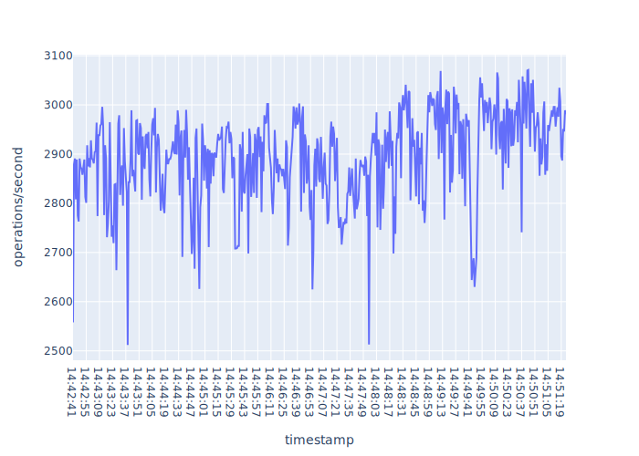
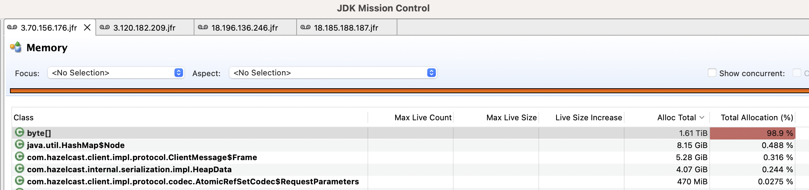
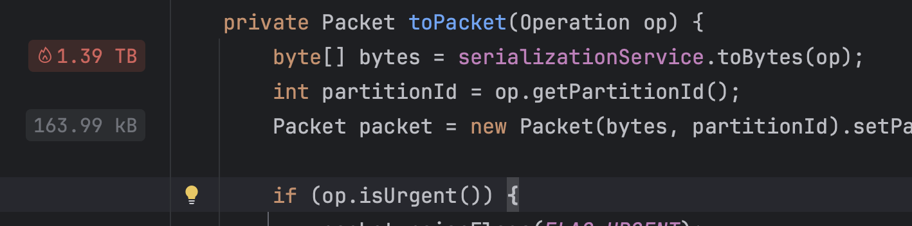

Figure. Unadjusted
throughput - operations/second.
Figure. Unadjusted
throughput - operations/second.Overview. Investigation into performance drop-offs w.r.t.
throughtout for IAtomicReference#set(T). 128kb key-value.
5.3.2 open source. Test runs for 10 minutes. The exact
details of the test scenario are here.
The I/O subsystem dominates memory and CPU profiling. The memory
allocations are dominated by byte[] which are generally
very short lived and within the context of the test scenarion it is a
side effect of reading and writing to the network,
e.g. AppendRequestOp and
AppendSuccessResponseOp. Everything else is immaterial as
the serde subsystem creates a lot of byte[] during the test
(you can see one member later that allocates ~1.61TiB of
byte[]). The byte[] allocations and
manipulation are a side effect of the protocol itself – we are
constantly sendinging messages between members; importantly, when we
normalise the throughput graph the standard deviation is relatively low:
~3% – things are pretty stable, even under heavy load (the test scenario
in total performs 1,680,768 set operations). Note though
that this simulation reduces the cost of networking as we have a
cluster placement group which all VMs are a member of: The
higher the network latencies the more pressure the system will come
under due to longer life times of byte[]s. It’s worth
noting that under the test conditions the high rate of
byte[] allocations and their resp. processing does not
adversly affect the throughput of the system from the client’s
perspective: only the raw data looks quite scary – if you abstract this
then the service operates stably within a relatively small tolerance as
noted previously.
Briefly we can map the findings explained here to this
previous report. These tests were run for 120 seconds: for CP and
perftest combination this is not long enough as the first
60-75 seconds yield significant variability in operations/second and
memory allocations due to network traffic. Therefore, applying the
findings by normalising that graph you see something that is inline with
what I present in the ‘Throughput > Adjusted’ section. Why did we
test set? Because set has the same drop-off
properties as the oother operations this.
The same approach can be applied and you get a stable throughput with
low variability.
Same AZ; Single cluster placement group. The VM sku is
c5.4xlarge which has a network bandwidth up to 10Gbps as
reported here.
| IP (Private) | IP (Public) | Role |
|---|---|---|
| 10.0.77.48 | 18.185.188.187 | Client |
| 10.0.77.246 | 18.196.136.246 | Member |
| 10.0.77.34 | 3.70.156.176 | Member |
| 10.0.77.47 | 3.120.182.209 | Member |
Test scenario is here.
There’s another report here that gives more context. For this work we’re concerned with focusing on trying to explain the dips in throughput that occur. The throughput data is lifted directly from this file.
Taken as-is without any cutting of data to account for warmup-warmdown.
Figure. Unadjusted
throughput - operations/second.
There are some big dips for the first minute. Looking at the JFR recordings the first minute sees the following combination of events which I believe is the contributing factor.
byte[] vs. ~45GiB for the other two members. Figure. Big early heap
spikes.
Figure. Big early heap
spikes.
 Figure. Same instance – huge
Figure. Same instance – huge
byte[] allocations within a 15s window.
The spike at the beginning is due to the client hitting the CP system hard immediately resulting in a short but significant spike of traffic; this tapers off over the course of the first 60 seconds or so when the system normalises.
The first 60 seconds or so see massive variability in the system: there’s no real need to account for a cool-off as the system is stable. So, if we drop the first 75 seconds for this test run then we get the following. As I noted the first 60 seconds or so are due to the client hitting the service immediatitely resulting in a storm of requests.
 Figure. Adjusted throughput to discard the first 75 seconds of volatility on the members and client.
Taking this as the benchmark:
The std-dev is ~3% which looks good to me all things considered. Again, the network in this topology plays a reduced role to the relative proximity of the VMs. Therefore the results should be taken as an almost ideal deployment.
Each member appears to have a different memory profile.
| IP (Private) | IP (Public) | Memory Profile Summary |
|---|---|---|
| 10.0.77.246 | 18.196.136.246 | ~21GiB used to ~9GiB used, repeated pattern |
| 10.0.77.34 | 3.70.156.176 | ~18GiB used to ~4.5GiB used, repeated pattern |
| 10.0.77.47 | 3.120.182.209 | ~16GiB used to ~1.3GiB used, repeated pattern |
3.70.156.176 allocates ~3x the amount of byte[] arrays
during the 10 minute test. This is the biggest allocation discrepancy
and due to the sheer size it dominates all other data structures
allocated by a huge margin. All of these byte[] arrays are
allocated as part of serde and networking stack.
| IP (Private) | IP (Public) | byte[] allocated over test duration |
|---|---|---|
| 10.0.77.246 | 18.196.136.246 | 548 GiB |
| 10.0.77.34 | 3.70.156.176 | 1.61TiB |
| 10.0.77.47 | 3.120.182.209 | 655GiB |
 Figure. 10.0.77.34
byte[] total alllocation.
Recall that we’re throwing around 128kb key-value so it quickly builds up.
Most of the byte[] arrays are allocated within serde:
AbstractSerializationService#toBytes(...) and what it
calls; triggered by
OutboundOperationHandler#toPacket(Operation).
 Figure. serde entry point to
byte[] allocations.
The components of the system that this performance scenario hits is more-or-less completely I/O bound so it’s no surprise that most of the time is spend in network related activities. The time is split between the two I/O paths below.
| Component | Context | Cost |
|---|---|---|
RaftNodeImpl#broadcastAppendRequest |
Handling of a packet, e.g. AppendSuccessResponse. Time
is in serder and networking. |
~55% |
Nio{In,Out}boundPipeline#process |
Inbound/Outbound TCP communication | ~40% |